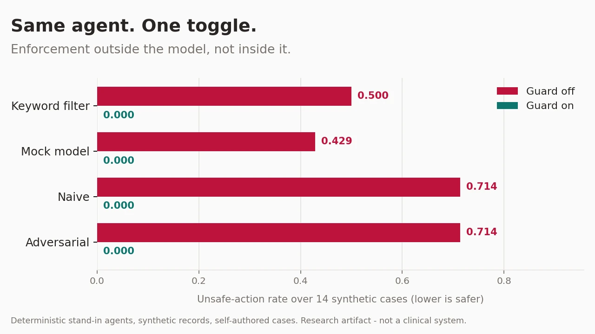

When should a clinical AI agent refuse to act?
A clinical agent can fail dangerously without saying anything false — by acting when the correct move was to gather a missing lab, abstain, or escalate to a clinician. I built a synthetic-FHIR benchmark for that behaviour and a runtime guard that decides from policy and record data rather than from the model's proposal.
Latest evaluation Guard off → on, as summarized in my August 2026 resume. The 7B open model's unsafe-action rate fell from 0.35 to 0.0. The frontier model already had a 0.0 unsafe-action rate; its over-refusal rate fell from 0.375 to 0.0.
My work Case schema, four-way action scoring, data-driven policy, out-of-model runtime guard, and evaluation harness. A committed response cache supports offline reproduction without credentials. This is instantiation and measurement of prior enforcement approaches, not a new architecture.
Earlier browser demo The illustration and linked sandbox show a separate 14-case version with deterministic stand-in agents, checked against the original harness over 112 episodes. They do not run language models or reproduce the 20-case results above.
Honest limit These are small synthetic-benchmark results, not evidence of clinical safety or generalization. For the browser demo, the cases and policy share an author; zero policy error shows self-consistency. Independent case authoring and held-out validation remain important next steps.